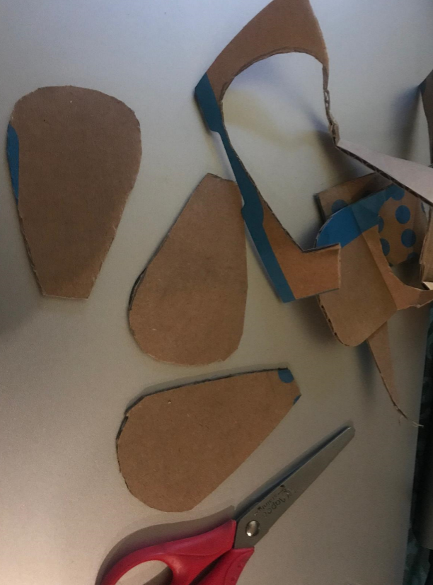
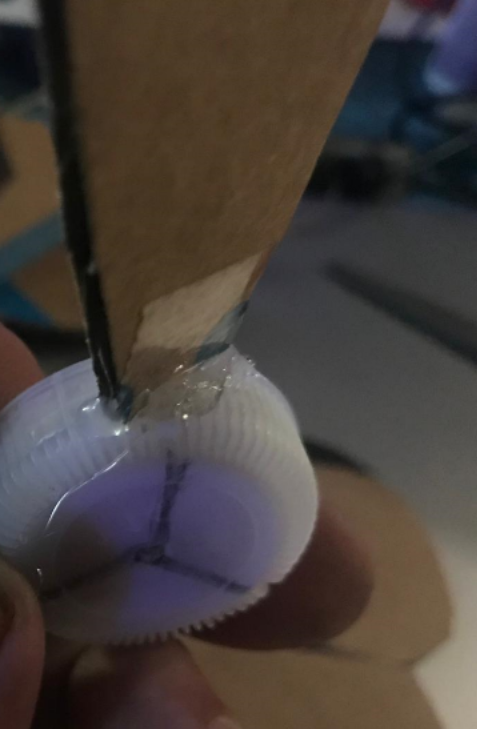
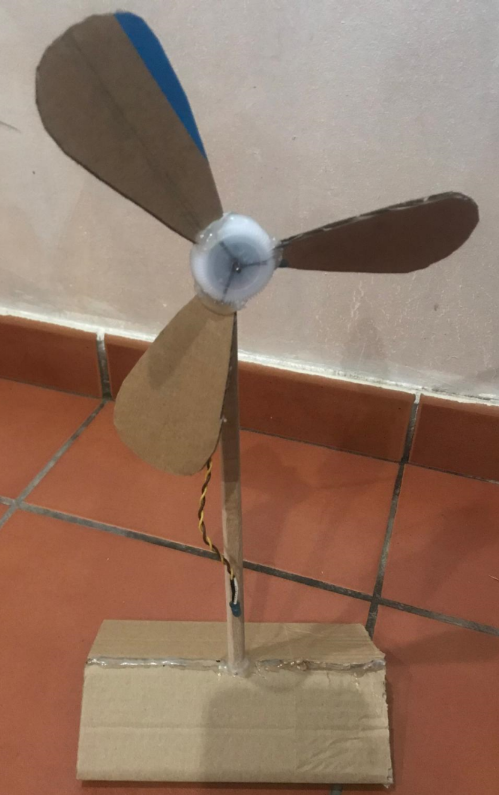
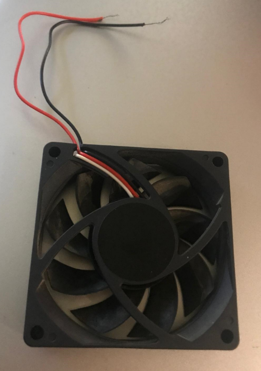
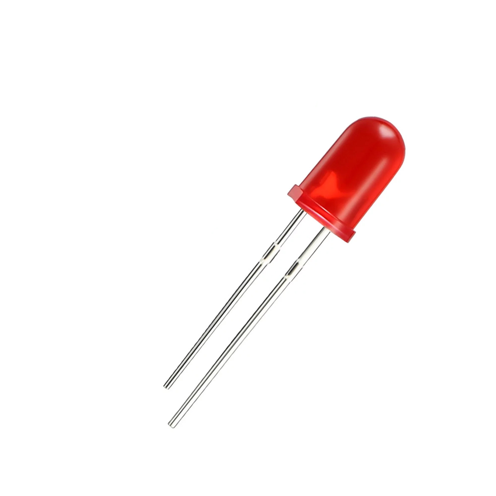
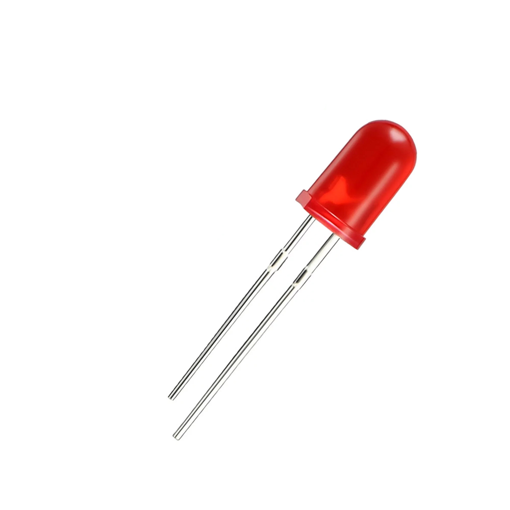

Desarrollo de las sesiones
Materiales para leer o ver en casa.
¿Qué tenemos que hacer y cómo?
Empezamos la clase (15 minutos)
1.- Hacemos un repaso de los contenidos que habéis revisado en casa. Os voy a hacer algunas preguntas para activar vuestros conocimientos previos y asegurarme de que todos lo habéis comprendido.
2.- Después vamos a dividir la clase en grupos cooperativos de 3 o 4 estudiantes y os voy a dar instrucciones para la construcción de nuestro aerogenerador.
Primera Actividad (25 minutos)
Construimos el generador utilizando los materiales proporcionados por el profesor. Cada grupo construye el generador siguiendo las instrucciones y los vídeos que hemos visto en casa, pudiendo hacer las variaciones o combinaciones que deseen. También se pueden utilizar materiales reutilizables, como los ventiladores de un viejo ordenador.
     

ATENCIÓN: los diodos LED tienen "posición" quiere decir que el cable rojo debe ir a la patilla positiva (ánodo) y el cable negro a la patilla negativa (cátodo). El diodo tiene que ser de color rojo, ya que es el que menos voltaje necesita para encenderse.

Segunda Actividad (15 minutos)
Medimos y registramos el voltaje y amperaje generado. Una vez construido, cada estudiante del grupo utiliza un multímetro para medir el voltaje (fuerza de la corriente) y amperaje (cantidad de corriente) generado por su generador eólico y registrar los datos obtenidos en una plantilla proporcionada por el docente (se requerirá un secador de pelo con temperatura en frío para mantener un flujo constante, que será aplicado por otro estudiante).
Tercera Actividad (10 minutos)
Cada estudiante del grupo realiza un breve informe sobre el proyecto realizado, incluyendo una descripción del generador, los datos de voltaje y amperaje medidos y sus conclusiones. Posteriormente revisarán el informe para asegurarse de que toda la información es clara y precisa.